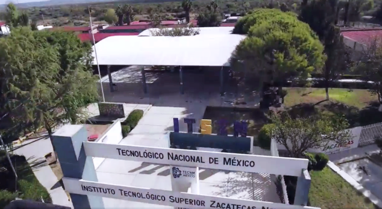

Conócenos
Una institución comprometida con la educación superior tecnológica y el desarrollo de la región norte de Zacatecas.

Una institución que transforma conocimiento en desarrollo
El Instituto Tecnológico Superior Zacatecas Norte es una institución pública de educación superior tecnológica ubicada en Río Grande, Zacatecas. Desde su creación, trabaja para ofrecer una educación de calidad que contribuya al desarrollo de su comunidad, de la región norte del estado y del país.
Educación tecnológica
Formación profesional orientada a las necesidades sociales y productivas.
Desarrollo regional
Contribución al crecimiento sostenible de la región norte de Zacatecas.
Comunidad educativa
Estudiantes, docentes, personal administrativo, directivo y familias trabajando en conjunto.
Nuestra historia
Fundación
Creación del Instituto Tecnológico Superior Zacatecas Norte mediante decreto del Ejecutivo del Estado.
Consolidación
Una comunidad educativa orientada a la educación superior tecnológica, la formación profesional y el desarrollo regional.
El ITSZN fue creado el 20 de noviembre de 1990. Desde entonces, su historia se ha construido con la participación de toda su comunidad educativa y con el propósito de contribuir al desarrollo de la región norte del estado de Zacatecas y del país.
Nuestra filosofía
Misión
"Ofrecer servicios de educación superior tecnológica de calidad, pertinente y equitativa que coadyuve a la conformación de una sociedad justa y humana, con una perspectiva de sustentabilidad y seguridad."
Visión
"Ser uno de los pilares fundamentales del desarrollo sostenido, sustentable y equitativo de la nación."
Valores que nos representan
Respeto
Actitud de tolerancia y aceptación de los demás para construir relaciones armoniosas.
Fraternidad
Espíritu de solidaridad para alcanzar objetivos comunes y favorecer el desarrollo individual y colectivo.
Disciplina
Aceptación de normas que permiten mantener el orden y alcanzar metas personales y organizacionales.
Calidad académica
Mejora continua de los servicios educativos para desarrollar capacidades y buscar la excelencia.
Espíritu de servicio
Disposición positiva para realizar esfuerzos que proporcionen algo útil y benéfico.
Comprometidos con una formación integral
Formamos profesionistas competitivos, emprendedores y socialmente comprometidos, capaces de responder a los desafíos del mundo contemporáneo.
Nuestro compromiso va más allá del aula: integramos principios de calidad, respeto al medio ambiente, seguridad y salud ocupacional en cada una de nuestras actividades académicas y administrativas.
Visítanos
Instituto Tecnológico Superior Zacatecas Norte
Carretera a González Ortega km 3, C.P. 98400, Apdo. Postal #178, Río Grande, Zacatecas.
(498) 488 30 02
contacto@itszn.edu.mx
Forma parte de nuestra comunidad
Conoce nuestra oferta educativa y descubre las oportunidades que el TecNM Campus Zacatecas Norte tiene para ti.